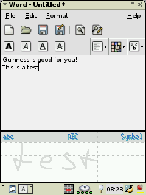
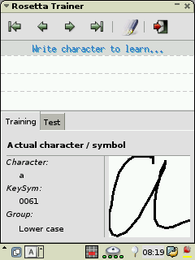

Rosetta is a new handwriting recognition engine for the X Window System. It supports multi stroke recognition and recognition for whole words / sentences.
It captures characters written in a small window with a pointing device (mouse, tablet or pen), recognizes them and passes the relating keypress events to
the actualy focused window.
You can write multi characters at once, but they may not be connected (like script). Single characters are recognized depending on the field you write in
(lowercase, uppercase or special characters), multiple characters are recognizes as lower case characters .
Rosetta has been developed on Linux systems, (i386 and StrongARM), but should be quite portable to any reasonable system with X.
Rosetta is free software distributed under the GNU General Public License, (GPL).
Many of the ideas that have gone into the development of Rosetta are derived from xmerlin, written by Stefan Hellkvist. To His Ideas I added the multi stroke support and some more classification functions, resulting in Rosetta.
Here are some screenshots:
|  |  |
There still is no final release of Rosetta, so please download the source from handhelds cvs by now.
In short, if you are not (yet?) a developer, you do the following to get an initial copy of the Rosetta sources:
$ cd rosetta_cvs
$ export CVSROOT=:pserver:anoncvs@cvs.handhelds.org:/cvs
$ cvs login
Logging in to :pserver:anoncvs@cvs.handhelds.org:2401/cvs
CVS Password: anoncvs
$ cvs checkout rosetta
You only have to do this once. The next time you want to update
your copy of the sources, do:
$ cd rosetta_cvs
$ cvs update
For a more detailed description about how to use handhelds.org CVS, please see here.
You can examine the CVS repository directly here.
Compiling rosetta
To compile rosetta you will need X11 and a C compiler. for the rosetta learning application you'll also need GTK 2.x and the
GPE build framework (e.g. libgpewidget)
If you would like to compile rosetta, simply edit the Makefile to point to correct locations for X and GPE and the type "make". (Yes, this is a primitive build environment -- something fancy like autoconf perhaps will come in a future release).
To install, simply type "make install"
The rosetta package consists of two applications. rosetta itself and the rosetta leaning application.
Running rosetta the first time will result in a long startup time. There will be done some precalculations which will be saved in
/usr/local/share/rosetta/rosetta.pc
Rosetta will be installed together with a standard config file for german and english characters. The config file is located in
/etc/rosetta.conf
Rosetta neets a database of known strokes. The one shipped with rosetta contains my handwriting. You could create your own by starting the learning application, klick on the "learn" button and then write character by character all characters shown in the "Name" field. Every character can contain of one or more strokes. After closing the learning application your own database is saved.
The global database is located at:
/usr/local/share/rosetta/rosetta.db
The user database is located at:
~/.rosetta/rosetta.db
After starting rosetta itself you'll get a small input window. With mbdesktop it will be integrated as new input method. The input window is seperated into three fields.
Field "abc" is dedicated to lower case characters / numbers and some
interpunctation characters.
Field "ABC" is dedicated to upper case characters and also numbers and some
interpunctation characters.
Field "Symbol" is dedicated to all other characters and special function
keys (eg. cursor keys, function keys etc.)
If you write only one character the field you write in will be respected. If you write more than one character all characters will be assumed to be lower characters / numbers or some of the interpunctation characters (same as if you wrote in "abc" field). All characters have to be seperated from each other, so you may not write script but "printed characters".
If you write more than one word rosetta will try to find out the word seperation.
The german "umlaute" (e.g. הצ�) wont have their own representation in the database. They will be matched by the number of "dots" you wrote on top of the character. This is configurable in the config file.
In the learning application you can overwrite each character by hand or learn the whole configured alphabet. To overwrite a single character simply navigate to the character and then write the new one. To train the whole alphabet navigate to the first alphabet and press the learn button. Now write every character as shown in the "name" label. As configured in the config file every character is repeatet several times in the database to get better results in the recognition.
Automatic learning is stopped by navigation in the database or by changing to the testmode.
In testmode (Test tab) you can write characters and words an will see the result in the input box.